What Everyone Should Know About Mechanical Watches · PART 2
Changed The World
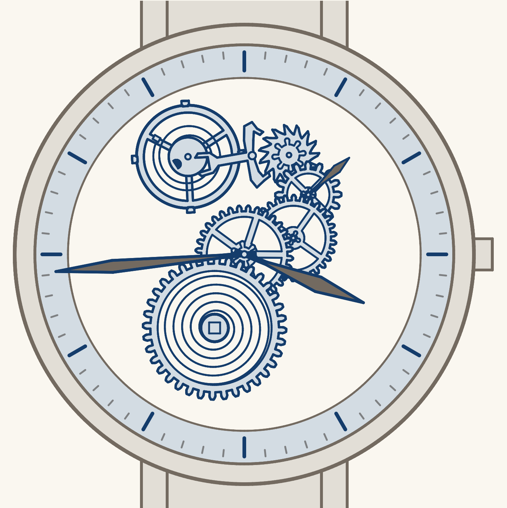
The gears and springs we just explored aren’t just clever engineering. They shaped modern history, starting on the open ocean.
Age of Sail: Longitude Is a Guess
Sailors during the Age of Sail could easily track their latitude (north–south) by sighting the noon sun or the North Star. Longitude (east–west), however, was a deadly blind spot. Without a reliable way to calculate longitude on the open ocean, ships routinely drifted 400 miles or more off course.
Hunt for Juan Fernández Island, 1741
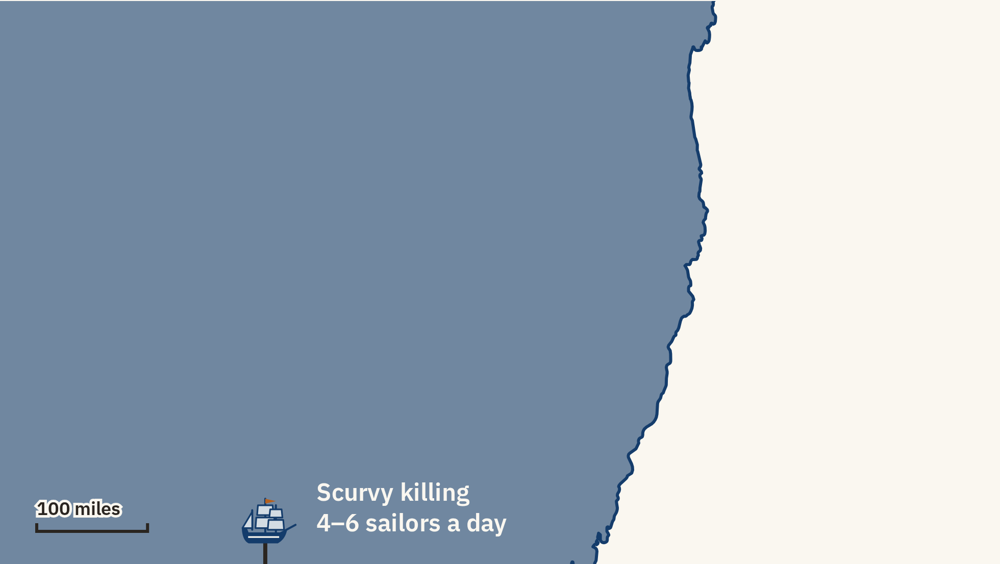
In May 1741, Commodore George Anson’s three ships were low on fresh water and provisions. Scurvy was rapidly spreading, killing four to six sailors a day. They headed for Juan Fernández island, off the coast of Chile. They used a common tactic, sailing north to the correct latitude, then turning and sailing east or west.
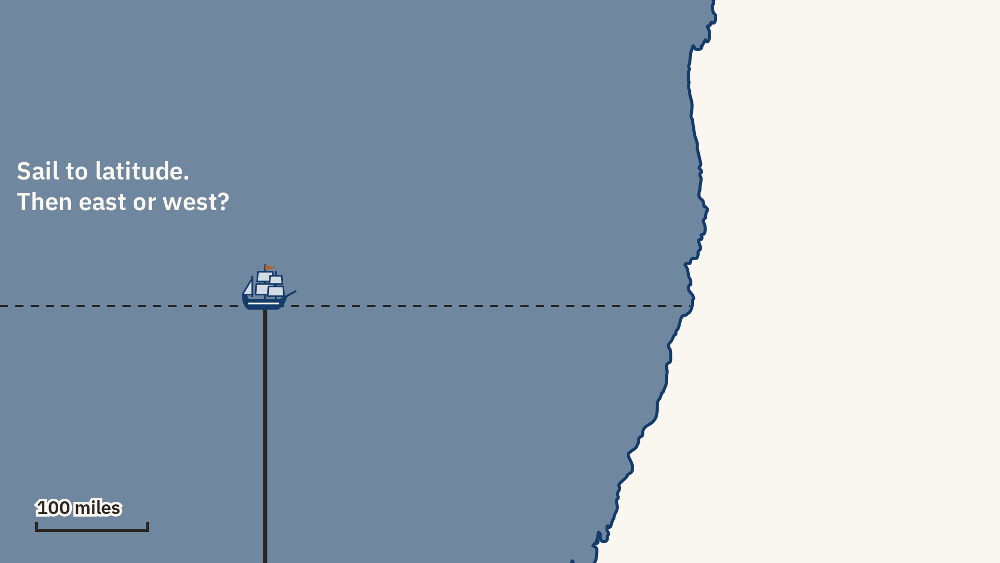
When they reached its latitude, they didn’t know whether the island was east or west of them. Commodore Anson sailed east. Two days later, when they saw land, it wasn’t the island they desperately needed—it was Chile, enemy territory.
They turned around. Headwinds and calms stretched the return journey to nine days, the same distance that had taken two days eastward, with four to six sailors dying every day.
At dawn on the eleventh day, they finally saw the island. Not being able to tell their longitude led them on a detour costing 70 to 80 lives. They had been only a few hours from the island when they turned the wrong way.
The Longitude Prize, 1714
Nearly thirty years before Anson’s ordeal, a string of catastrophic maritime disasters pushed Britain’s Parliament to pass the Longitude Act in 1714. It offered a fortune to anyone who could find a ship’s longitude at sea:
Within one degree (about 70 miles), the prize was £10,000, or roughly $2.3 million in 2026. Within half a degree (35 miles), it doubled to £20,000, about $4.6 million in 2026.
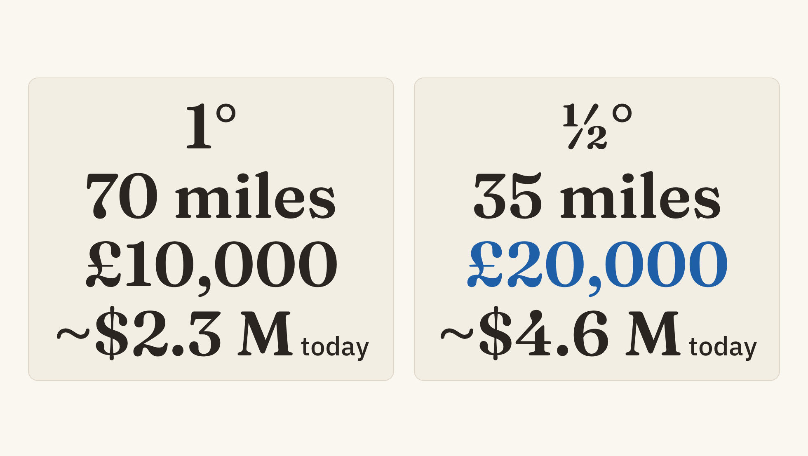
Longitude From Time
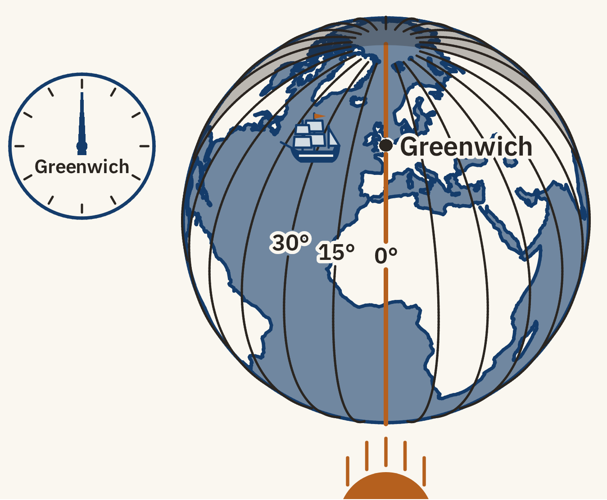
What does this have to do with watches? Noon does not come to everyone at once, which is why we have time zones. The Earth turns toward the east. When it is noon at the Royal Observatory in Greenwich, England (the definition of 0° longitude), a ship 30 degrees to the west has not reached noon yet.
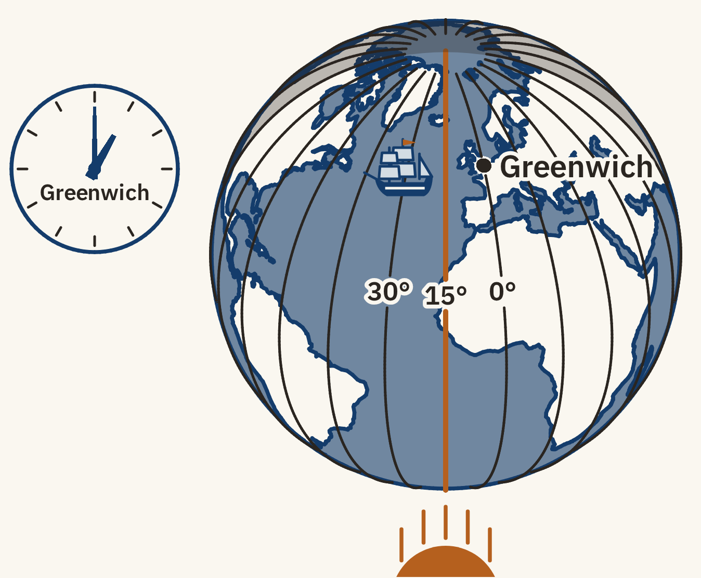
The Earth turns a full 360° in 24 hours. That’s 15° per hour, one meridian line on this globe. Noon has moved 15 degrees west, and it has not reached the ship yet.
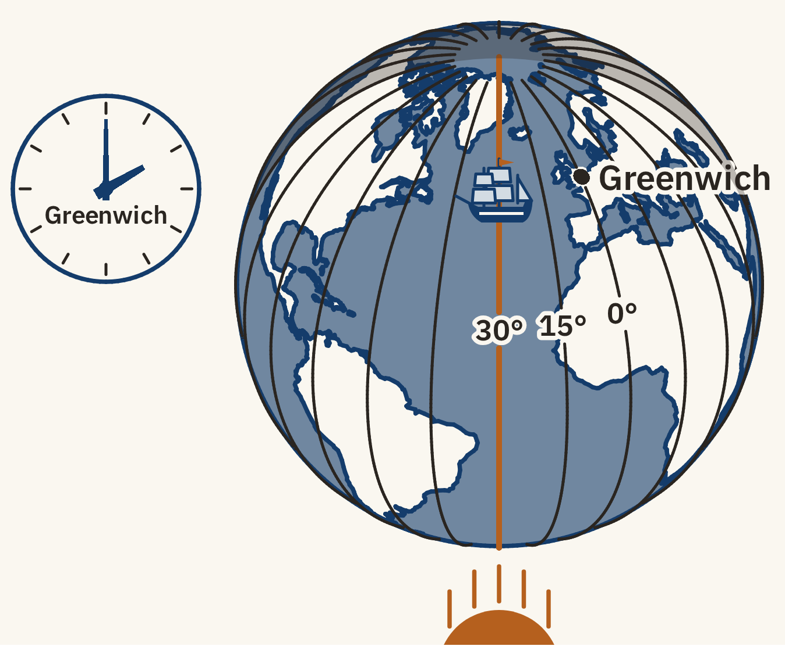
A navigator can measure noon at sea: it is when the Sun stands highest. After a second hour, noon reaches the ship. If the ship carried a watch that keeps Greenwich’s time, at the ship’s noon, it reads 2 p.m. Each hour behind Greenwich is 15 degrees west, so the ship is 30 degrees west.
How Accurate Did the Watch Need to Be?
How good must that watch be? Sixty minutes divided by 15 degrees is 4 minutes a degree. To find it within half a degree, the Act’s top prize, the clock must be right within 2 minutes.
Over a voyage of 6 weeks (42 days), the watch can gain or lose only about 3 seconds a day.
Isaac Newton's Doubts, 1714
In 1714, the most famous scientist alive, Isaac Newton, weighed in. A watch that keeps time exactly, he said, was one way to find longitude. But:
by reason of the motion of a Ship,the variation of heat & cold, wet and dry,and the difference of Gravity in different Latitudes,such a Watch hath not yet been made.
On land, pendulum clocks were far more accurate, but a ship rolls and pitches, rendering them useless. A watch’s balance swings on a spring instead, but each roll still jostles it.
Heat is worse. As a steel hairspring warms, it gets weaker, and the watch loses about 6 seconds a day for each degree Fahrenheit. Warm it by half a degree, and the prize’s 3 seconds a day are gone. The weather plunges from the tropics to the English cold, and the animal and vegetable oils on all those axles thicken in the cold and go rancid in the heat. Salt spray rusts the steel, and stainless steel wouldn’t be invented for another 200 years.
John Harrison: A Carpenter's Side Project
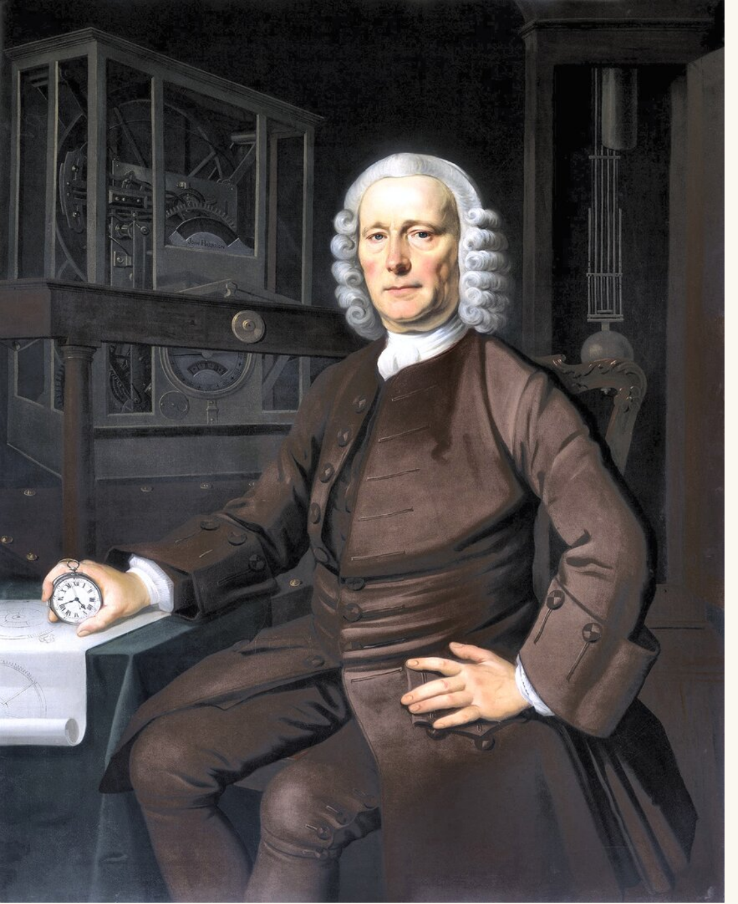
Painting by Thomas King, about 1767. Public domain.
_01.jpg){kind=link}
John Harrison was a village carpenter by trade. He taught himself to build clocks. His first clocks, from 1713, were made almost entirely of wood. A metal clock had to stop to be cleaned and oiled. So he made clocks that need no oil. Their bearings are lignum vitae, a tropical hardwood that oils itself.
In about 1722, he built a wooden clock for the tower at Brocklesby Park, in Lincolnshire. It still runs, over 300 years later, and it has never been oiled.
Thirty Years, Four Tries
In 1730, at about 37 years old, he took on Newton’s obstacles: he began work on a clock for the Longitude prize. His first took 5 years and, like his wooden clocks, needed no oil. To see it move, watch this 30-second clip.
It had its sea trial in 1736, to Lisbon and back. It did poorly on the way out, but on the way home, the ship’s master put the ship about 70 miles east of where it was, while Harrison’s clock got the longitude right. It had started as a side project. Now it worked, and from 1737 the Board of Longitude paid him to build a better one.
After 2 years on his second, he realized a design flaw and abandoned it. It never sailed.
He spent 19 years on his third clock. Along the way, he invented the bimetallic strip, his answer to Newton’s heat and cold, and the caged roller bearing, to cut friction. Both are still in wide use today. But he couldn’t get it to keep time regularly in all conditions.
By 1755, after twenty-five years of heavy, table-sized clocks, the third was still not right. But a watch that John Jefferys made to his design, in 1753, had shown him that a small timekeeper could work. And a small, fast-beating balance wheel resisted a ship’s motion, Newton’s first obstacle, far better than a large, slow one. So he began a fourth, and kept working on the third alongside it. The fourth was an oversized pocket watch, just five inches across and three pounds in weight. He finished both in 1759. In 1761, the watch went to sea.
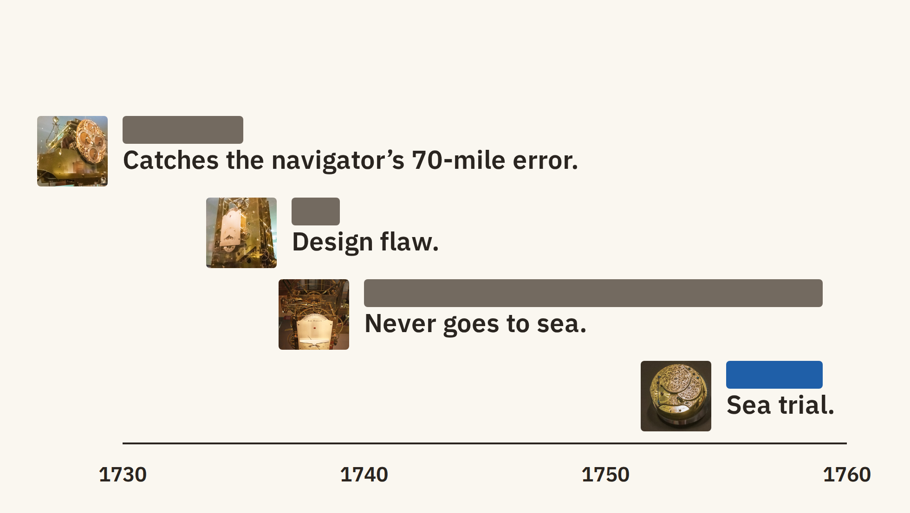
Photos of H1, H2 and H4 by Mike Prince, and of H3 by Tony Hisgett, under CC BY 2.0.
.jpg){kind=link}
.jpg){kind=link}
.jpg){kind=link}
.jpg){kind=link}
Does Harrison Win the Prize?
The prize needed 2 minutes in 6 weeks: 3 seconds a day.
Harrison’s watch sailed for Jamaica in November 1761. After 81 days, it was 5 seconds slow, or 0.06 seconds per day.
But the Board was not convinced, and sent the watch on a second trial. In 1765, it agreed that the watch had kept time within the strictest limit of the Act. But it paid only half the prize, holding the rest until Harrison proved his watch could be copied. Harrison appealed to King George III, who declared, “By God, Harrison, I will see you righted!”
The last payment came in 1773, 43 years after he started, from Parliament, not the Board. He was 80 years old. He died three years later.
Longitude at sea was solved.
A Minute Is Life or Death, 1853
On land, for the next eighty years, a minute here or there didn’t matter. Then came the railroads.
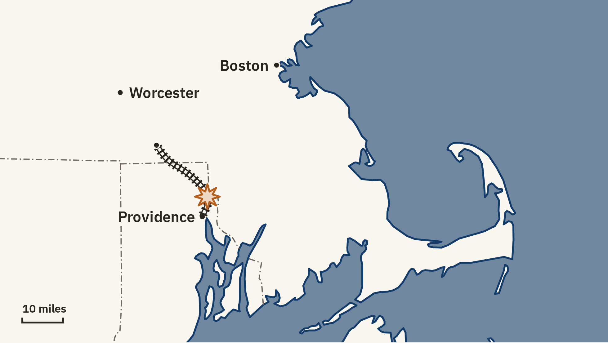
A train of the Providence & Worcester Railroad left Uxbridge, Massachusetts, with about 475 people, heading south for Providence.
At Valley Falls, the conductor, Frederick Putnam, looked at his watch. He thought he had time before the northbound train passed. But his watch was two minutes slow, although he had set it to the company’s time the night before.
Just past a blind curve, the two trains collided head-on.
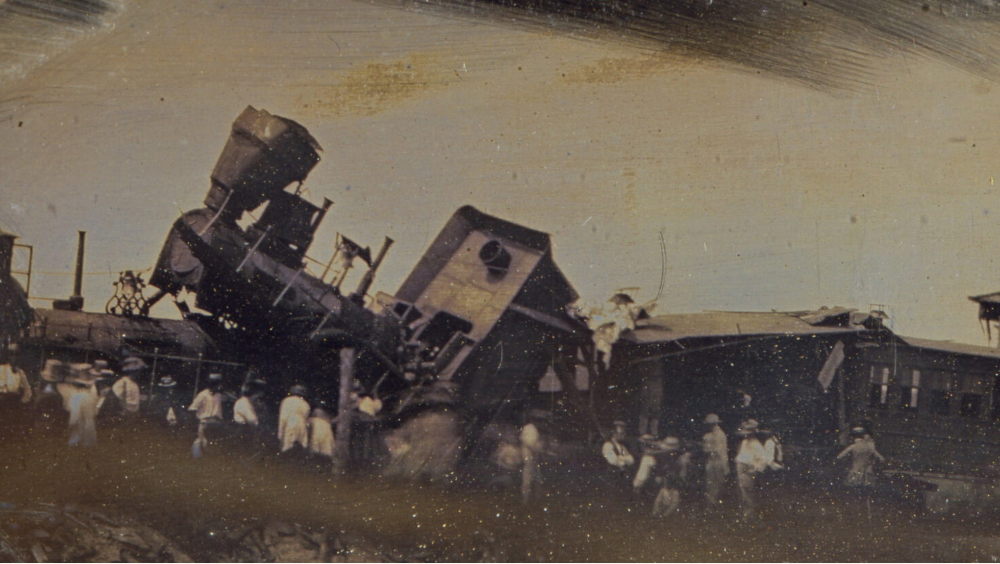
Daguerreotype attributed to L. Wright, 1853. Public domain.

Fourteen people died, and seventeen were seriously injured.
A photographer from Pawtucket, L. Wright, made this daguerreotype 10 minutes later. It may be the first photograph of a train wreck.
It was the second crash of its kind that week. Three days earlier, two trains of the Camden & Amboy Railroad collided in New Jersey. Four people died. The watches of the two crews were two and a half minutes apart.
The public was outraged, and the railroads changed their rules. Within days, the Boston & Providence Railroad, whose line met this one at Boston Switch, made each conductor have his watch certified as reliable by Bond & Sons of Boston. Bond repaired the watches at the railroad’s cost, and lent a reliable one while a conductor’s watch was in the shop. And the railroads of New England agreed on one time, sent by telegraph from the Harvard College Observatory, in Cambridge.
Waltham Watch Company, 1850s-1870s
A reliable watch, the kind railroads needed, cost $150, about $5,000 in 2026. Nearly every good watch was made by hand by a craftsman. If a part broke, a watchmaker had to make a new one, by hand.
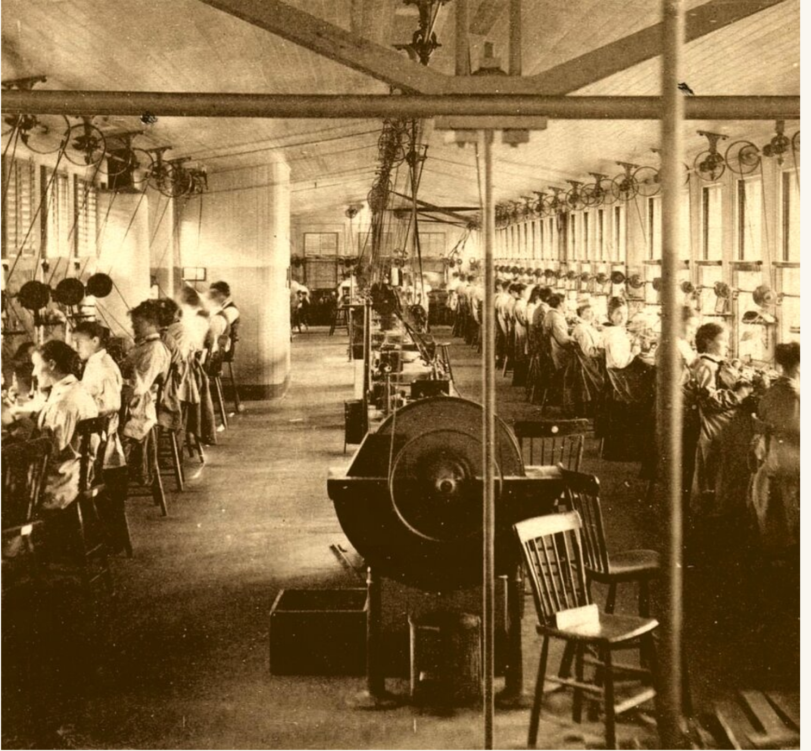
Photo by Thomas R. Lewis, 1870s. Public domain.
,_RP-F-2001-7-980-60.jpg){kind=link}
In the 1850s, the Waltham Watch Company pioneered the mass production of precision watches using machines and standardized parts. Steam engines turned long shafts under the ceilings, and belts from the shafts drove rows of machines that cut brass and steel finer than a hair. You could order replacement parts by number. In 1876, the factory made 2,200 watches a week.
And the watches were good. Waltham’s everyday watch, the P.S. Bartlett, kept time to within 10 to 15 seconds a day. Before, only a watch fitted by hand kept time that well. And the Bartlett was cheap, just $25, about $800 in 2026. An accurate watch became an everyday thing, for railroad workers, soldiers and the general public.
World War I, Trenches at Night, 1917
World War I pioneered synchronized assaults, coining the phrase “synchronize watches.” Soldiers need time at a glance, pushing watches out of pockets and onto wrists. But in a dark trench at night, striking a match invited a sniper’s bullet.
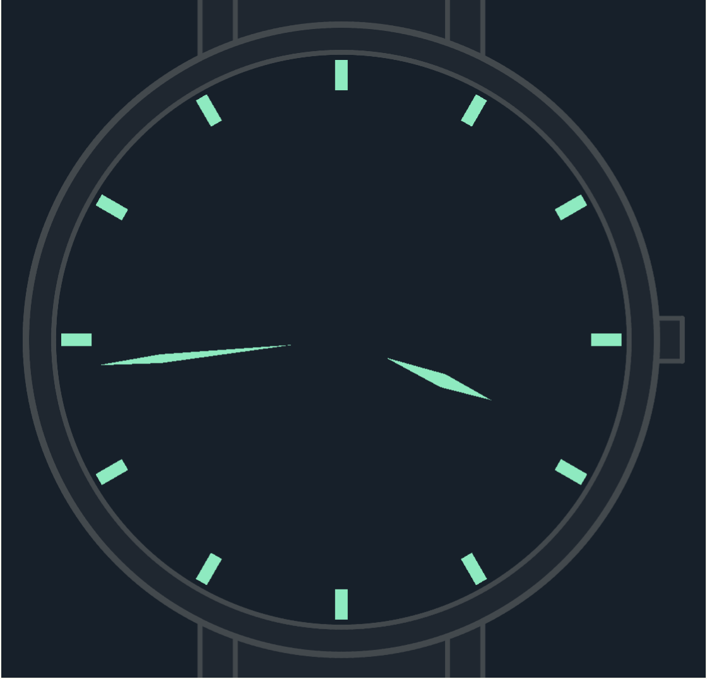
The answer was a paint that glowed by itself. Its secret was radium, an element that Marie and Pierre Curie had discovered in 1898. A company later named U.S. Radium sold its paint as Undark. On a watch’s hands and hour marks, it showed the time all night, without needing light to charge it first. Demand for luminous watches and instruments surged in the war.
Lip, Dip, Paint
Across the United States and Canada, thousands of young women were hired to paint those tiny dials by hand. It was considered an elite factory job. The work was clean, and it paid well.
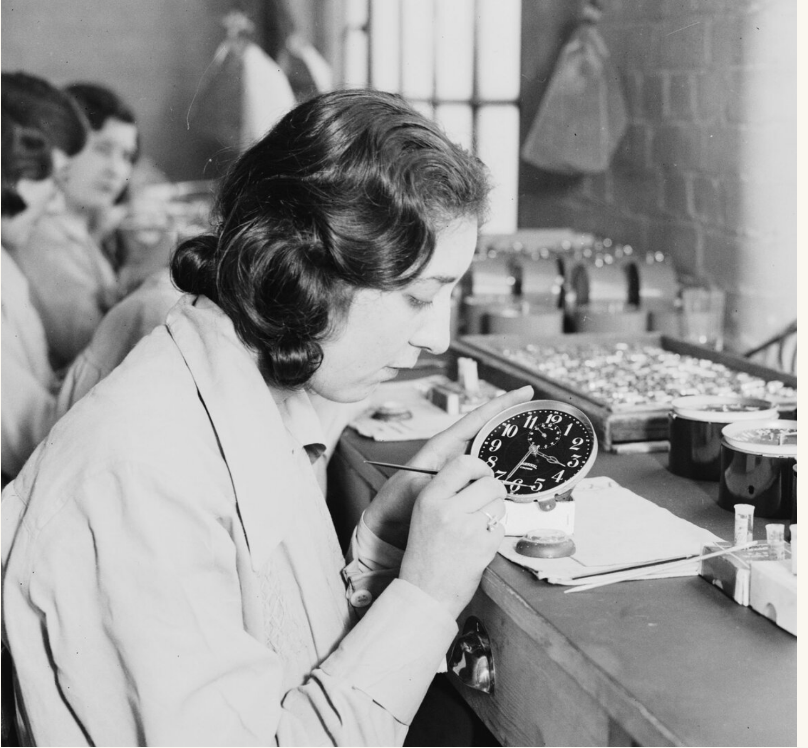
Photo by Leslie Cardew for the Daily Herald, January 14, 1932. Daily Herald Archive, Science Museum Group, © Mirrorpix/SMG Images.
At the time, people thought small doses of radium were actually good for you. Doctors administered it, and people drank radium water for health the way we drink mineral water today.
So the women were told the paint was harmless. Some even painted their nails and their teeth with it, for fun, to glow in the dark after work.
Supervisors taught the women to reshape their brushes by wetting the bristles between their lips: lip, dip, paint. Every day, each worker swallowed a little more radium.
Within a few years, the women began to sicken. The human body mistakes radium for calcium and builds it straight into bone. First their teeth ached and came loose. Then their jaws rotted, their hips and ankles shattered under their own weight, and dozens died of severe anemia and bone cancer.
At first, U.S. Radium refused to believe its prized paint was to blame. It paid a Harvard team to study the plant, and the team found radium was the cause. So the company sent the state a doctored copy of the report, which said that every girl was in “perfect condition.” It blamed the women’s deaths on syphilis, even after its own chief chemist died of radium poisoning. (In 1928, Undark’s inventor, Sabin von Sochocky, also died from the radium he had worked with.)
The Radium Girls
Former dial painter Grace Fryer fought back. Wearing a steel brace because radium had crushed her spine, she and four co-workers, called the “Radium Girls” by the press, sued U.S. Radium in 1927.
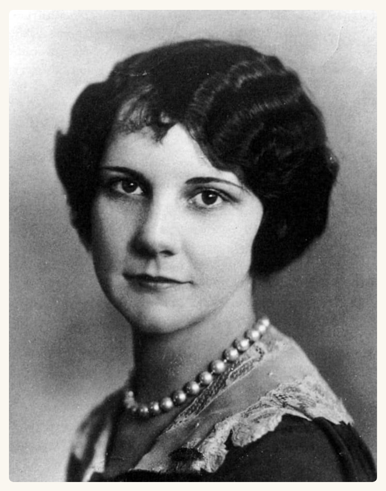
Photo by an unknown photographer, 1925. Public domain.

By their first court appearance in 1928, all five were too weak to even raise their arms to take the oath. Public outrage forced the company to settle, paying each woman $10,000 (about $190,000 in 2026), medical costs, and a pension.
Grace Fryer died in 1933, age 34.
Their fight changed both law and science. Until then, the law paid workers for a lost finger, but not for a poison that took years to strike. Cases like theirs helped change that. And the radium in their bones set the first safe limit for radiation inside the body. The Manhattan Project set its limit for plutonium from it.